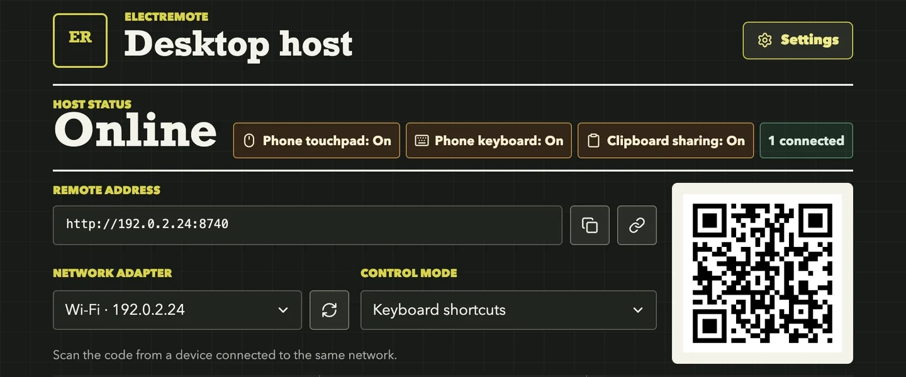
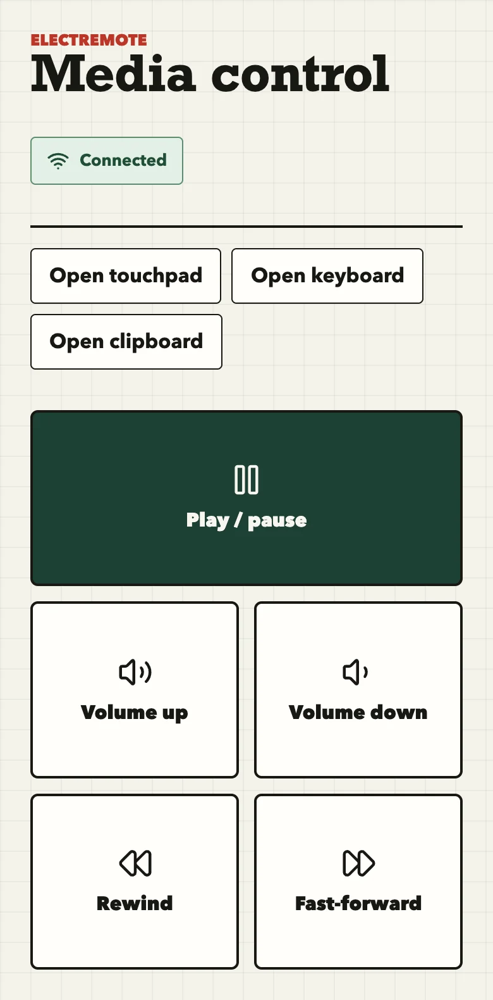

Old PC + TV
Turn an old PC into a media hub
Hook up a spare computer to the TV, open VLC or a browser, and leave the keyboard off the coffee table. Pause a movie or adjust the volume from your phone.
Free & open source
Pause the movie, move the mouse, or type from the couch. Electremote turns your phone’s browser into a remote control for your computer, right over Wi-Fi.
Windows macOS Linux


Works on your local network
No phone app or account
Pair with a QR scan
01 / The controls
Start with the media remote. Turn on the touchpad, keyboard, or clipboard in the desktop app whenever you need them. Pick a control below to see it in action.
02 / Real-life setups
Give an old PC a second life or keep your work screen free of media controls.
Hook up a spare computer to the TV, open VLC or a browser, and leave the keyboard off the coffee table. Pause a movie or adjust the volume from your phone.
Let a second computer handle podcasts or music. Pause an episode before a call or turn the volume down without switching away from your work.
Plug your laptop into the TV over HDMI. Use your phone as a touchpad to pick the next video or as a keyboard to find it by name.
03 / Getting started
Install Electremote on the computer you want to control. Your phone only needs a browser.
Download Electremote for Windows, macOS, or Linux and open it on your computer.
Connect your phone to the same local network and point its camera at the code in the desktop window.
Open the link in your phone’s browser. Bookmark the remote so it’s ready for next time.
04 / Download
Pick the package for your computer from the latest GitHub release.
x64 ZIP. Extract it and open Electremote.exe.
Apple Silicon or Intel DMG. Drag Electremote into Applications.
DEB or RPM packages for x64 and ARM64.
Free to use. MIT licensed.
05 / Good to know
No. Install Electremote on your computer, then open the QR link in your phone’s browser, such as Safari or Chrome.
No internet connection is needed once you’ve downloaded the desktop app. The computer and phone just need to be on the same local network. Your computer can use Ethernet or Wi-Fi.
Yes. Turn on Phone touchpad or Phone keyboard in the desktop app, then open that control in your phone’s browser. Use the touchpad to move, click, and scroll, or send text and shortcuts to the active app.
Electremote sends keyboard shortcuts or system media keys. Keyboard mode works with the active player if it responds to Space and the arrow keys. In system media key mode, your operating system chooses the player, and rewind and fast-forward act as previous and next track.
Yes. Turn on Start at login in the desktop app’s Settings. On Linux, your desktop environment needs to support XDG Autostart.